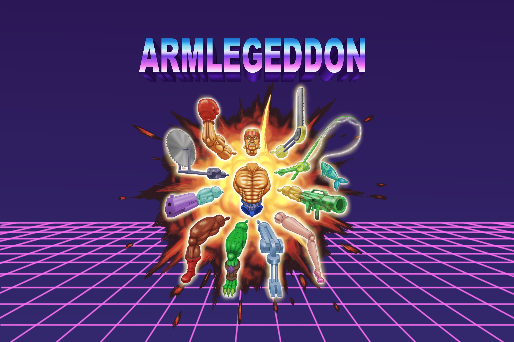

Hold on to your socks... 'cause THIS is ARMLEGEDDON!
In ARMLEGEDDON, victory may cost an arm and a leg! Play in VR as an action figure and fight your way through hordes of toys! Tear the limbs off your enemies and replace them with yours to gain different effects! Mix and match different weapons to become the ultimate plastic murdering machine!
This first-person rogue-like demands the player to fight an onslaught of toys while mixing and matching their limbs to gain a plethora of different weapons and effects, all while racing to the end with your sentience (health) draining as the child grows bored.
Independently developed an advanced game development study on the designs of inventory interfaces in VR, and how components of them influence the player's experience.
An independent stealth-soulslike action game inspired by Dishonored and Bioshock